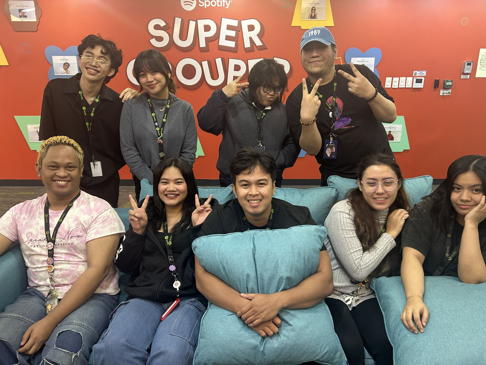
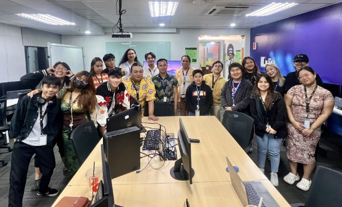

The resume says what I did. This is how it connects.
Commercial and account work at ClickUp first, then the frontline customer experience and knowledge management that came before it. An HR internship ran alongside.
Back to the summaryThe work changed.
From frontline customer experience into B2B SaaS.
At Spotify the customer was a person with a question. At ClickUp the customer is often a team, an account, and a commercial relationship at the same time.
The job is to understand all three, and get the right people involved when one conversation touches more than one of them.
- 2,500+
- 100+
- 60+
- 56 of 300+
- Commercial qualification
- Customer needs
- Renewal engagement
- Retention
- Billing and contracts
- Cross-functional coordination
- Security and compliance
- Knowledge and workflows
Some customer problems aren't really “support” problems.
When an account matter touches several teams, someone has to keep the customer-facing thread together.
I handle complex account-management escalations: I keep the customer-facing thread, connect the right internal stakeholders, and keep follow-through moving. Technical escalations stay with the technical teams.
- Sales
- Engineering
- Product
- TAM
- Billing
- Finance
- Deal Desk
- Legal
- Marketing
I handle account-management escalations.
Renewals are conversations first.
These are my accounts. I talk with customers about renewing or not renewing, surface what's behind the decision, and coordinate help where it makes sense.
- US$6,295
- ≈ US$75,540
One figure shown two ways (MRR × 12). Associated with the 56 accounts. Not contracted ARR.
Not every customer signal is an opportunity.
But some are.
I identify commercial needs in everyday customer conversations, then assess customer needs, projected value, and existing Sales engagement to decide whether Account Executive involvement makes sense.
Sometimes an opportunity is already in motion with Sales, and the useful thing is connecting new customer-side information to it. The opportunity itself stays with Sales.
Generally required for AE involvement, with separate handling for existing sales-assisted accounts.
Customer conversation
Usually a product or account question.
Business need
What the customer is actually trying to do.
Commercial signal
Scope, growth, or intent that goes beyond the question.
Context
Account history and existing Sales engagement.
Qualification
Projected value, fit, and whether AE involvement is warranted.
Sales
Facilitated AE engagement, or new information added to an opportunity already in motion.
Spotify

My first major professional chapter was frontline customer experience.
I supported Spotify users, artists, and creators across account, subscription, and platform questions, while completing my Psychology degree.
The role didn't stay frontline. It kept widening: from the customer in front of me, to the process behind the answer, to the system the team worked in, to the organization that hired and trained the team.
-
CustomerFrontline support for Spotify users, artists, and creators: account, subscription, and platform inquiries.
-
ProcessSOP and knowledge-base optimization in Guru, refining guidance on:
- Fraud scenarios
- Sensitive interactions
- Escalation handling
-
SystemContributed to the pilot and launch of Spotify's native support CRM, developed with LivePerson.
-
OrganizationRepresented the Manila site in Knowledge Management initiatives, validating new processes and tools with client stakeholders. Contributed to Spotify Wrapped 2025 campaign-based recruitment across multiple business lines.
Back to Sutherland, on the other side.
My Psychology degree required an HR internship. I did it on-site at Sutherland, on recruitment and talent work, while working full-time graveyard shifts and carrying a full course load.

- AI Fluency Anthropic · 2026
- Project Management Google × Coursera · 2025
- ClickUp
- Salesforce Limited access
- Zendesk
- Iterable
- Guru
- LivePerson